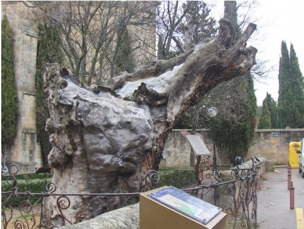

A UN OLMO SECO
Ir al final de la página

Al olmo viejo, hendido por el rayo
y en su mitad podrido,
con las lluvias de abril y el sol de mayo
algunas hojas verdes le han salido.
�El olmo centenario en la colina
que lame el Duero! Un musgo amarillentole
mancha la corteza blanquecina
al tronco carcomido y polvoriento.
No ser�, cual los �lamos cantores
que guardan el camino y la ribera,
habitado de pardos ruise�ores.
Ej�rcito de hormigas en hilera
va trepando por �l, y en sus entra�as u
rden sus telas grises las ara�as.
Antes que te derribe, olmo del Duero,
con su hacha el le�ador, y el carpintero
te convierta en melena de campana,
lanza de carro o yugo de carreta;
antes que rojo en el hogar, ma�ana,
ardas en alguna m�sera caseta,
al borde de un camino;
antes que te descuaje un torbellino
y tronche el soplo de las sierras blancas;
antes que el r�o hasta la mar te empuje
por valles y barrancas,
olmo, quiero anotar en mi cartera
la gracia de tu rama verdecida.
Mi coraz�n espera tambi�n, hacia la luz y hacia la vida, otro milagro de la primavera.Antonio Machado, 4 de mayo de 1912
Antonio Machado, 4 de mayo 1912
Más sobre Machado
Más poemas sobre Machado